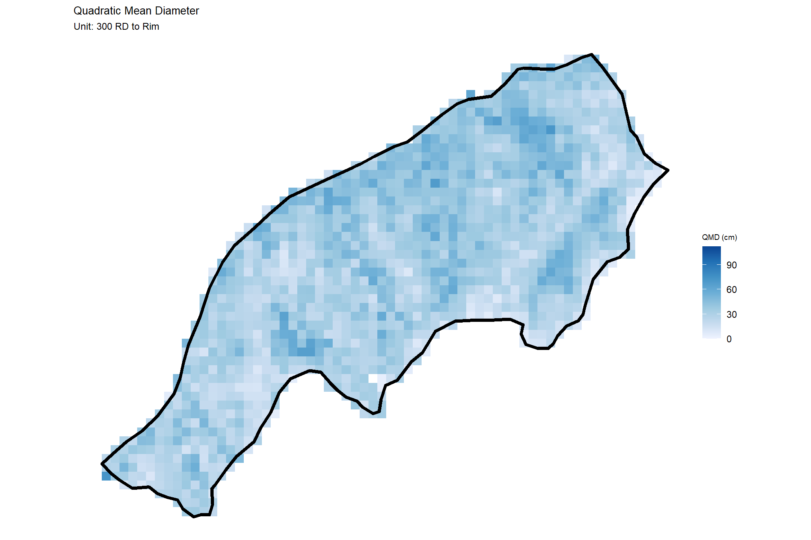
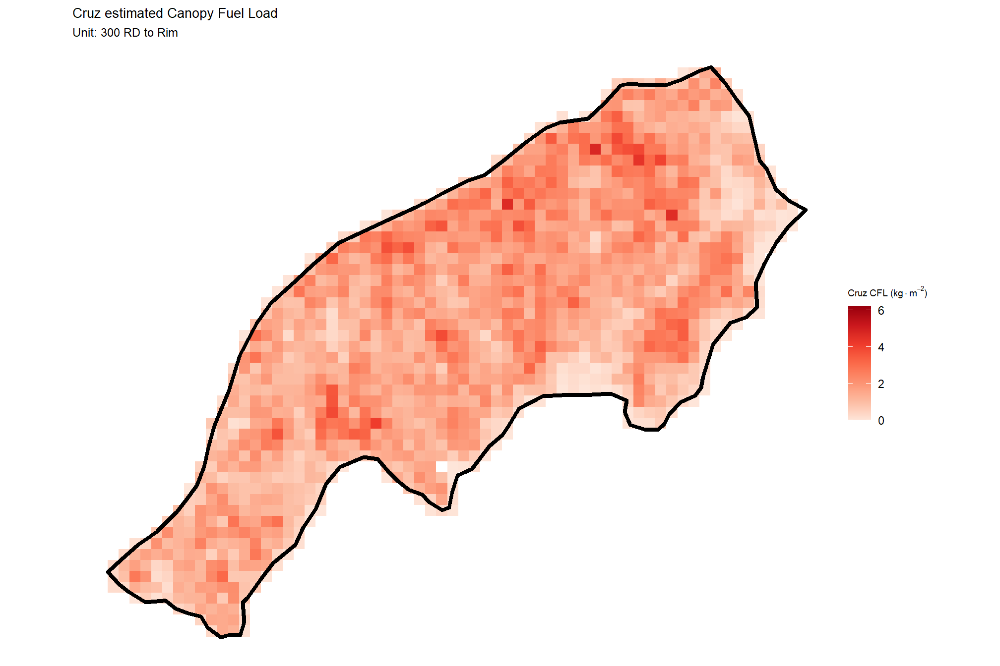
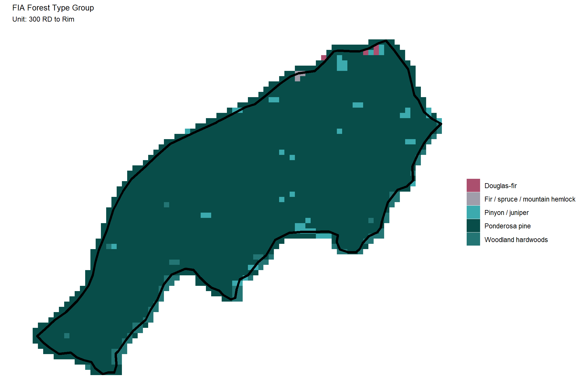

Section 3 Forest Stand Summary
In this section we’ll process the point cloud-extracted tree list data given stand boundaries that fall within the extent of the original point cloud data. When processing point cloud data with the objective for summarizing data within a forest stand, it is imperative to ensure that the point cloud extent completely covers and extends beyond the stand extent to avoid edge effects and tree artifacts.
create a directory for saving our analysis output
# make a dir for saving this stand-level data to
outdir <- "../data/mogollon_rim_fire_unit_trees"
if(!dir.exists(outdir)){dir.create(outdir, showWarnings = F)}3.1 Load data
first, we’ll load our stand data and the boundary data of the point cloud that we processed
# las data bounds
las_ctg_sf <- sf::st_read("../data/point_cloud_processing_delivery/raw_las_ctg_info.gpkg", quiet = T)
# get our proj crs
proj_crs <- sf::st_crs(las_ctg_sf)
# stands
stand_sf <- sf::st_read("../data/QUIK-Fire_Boundary/QUIK-Fire_Boundary.shp", quiet = T) %>%
sf::st_transform(proj_crs) %>%
dplyr::rename_with(~tolower(stringr::str_replace_all(.x,"\\.", "_"))) %>%
dplyr::rename(unit_id = id) %>%
dplyr::mutate(
stand_area_m2 = sf::st_area(.) %>% as.numeric()
, stand_area_ha = stand_area_m2/10000
)
# set our colors for the units
if(nrow(stand_sf)<length(harrypotter::hp_palettes$hermionegranger)){
my_pal <- harrypotter::hp(n=nrow(stand_sf), option = "hermionegranger")
}else{
my_pal <- viridis::turbo(n=nrow(stand_sf))
}what is the stand data?
## Rows: 2
## Columns: 7
## $ unit_id <dbl> 1, 2
## $ unit_name <chr> "300 RD to Rim", "Middle Kehl Canyon"
## $ hectares <dbl> 119.658, 200.666
## $ acres <dbl> 295.555, 495.645
## $ geometry <POLYGON [m]> POLYGON ((470742 3810364, 4..., POLYGON ((469974.3 38112…
## $ stand_area_m2 <dbl> 1195649, 2005096
## $ stand_area_ha <dbl> 119.5649, 200.5096let’s look at these bounds on a map
mapview::mapview(
las_ctg_sf
, layer.name = "point cloud tile"
, color = "black"
, lwd = 1
, alpha.regions = 0
, label = FALSE
, legend = FALSE
, popup = FALSE
) +
mapview::mapview(
stand_sf %>% dplyr::select(unit_name)
, zcol = "unit_name"
, col.regions = my_pal
, layer.name = "stand bounds"
, alpha.regions = 0.8
) we processed point cloud data well outside these stand bounds (it is not necessary to process data this far outside of our stands, a one tile buffer in this situation would have sufficed)
load in the tree top points data from cloud2trees::cloud2trees()
# get the data from already run
treetops_sf <-
list.files(
"../data/point_cloud_processing_delivery"
, pattern = "final_detected_tree_tops.*\\.gpkg$"
, full.names = T
) %>%
normalizePath() %>%
purrr::map(\(x)
sf::st_read(
dsn = x
, quiet = T
)
) %>%
dplyr::bind_rows()we’ll keep only trees where the tree top point falls within one of our stands and then use this tree list to filter our crown data so that we get the full crown polygon even if it extends outside of the stand boundary
treetops_sf <- treetops_sf %>%
sf::st_intersection(stand_sf %>% dplyr::select(unit_id,unit_name,tidyselect::starts_with("stand_area_")))The tree top point data is easier to work with for analysis since it takes less memory to load into our session and has the exact same structure as the crown polygons. At the end, we’ll bring in our crown polygon data, filter it with this tree list, and save it for sharing.
load in the DTM, aggregate to 2 m resolution, and write it
dtm_rast <- terra::rast("../data/point_cloud_processing_delivery/dtm_1m.tif")
# quick plot
terra::plot(dtm_rast, axes = F, main = "DTM (m)")
terra::plot(terra::vect(stand_sf), add = T, col = NA, border = "black", lwd = 2)
aggregate to 2 m
res_temp <- terra::res(dtm_rast)[1]
des_res_temp <- 2
if(res_temp<des_res_temp){
dtm_rast <- terra::aggregate(
dtm_rast
, fact = round(des_res_temp/res_temp)
, fun = "mean"
, na.rm = T
, cores = lasR::half_cores()
, filename = file.path(outdir, paste0("dtm_",des_res_temp, "m.tif"))
, overwrite = T
)
}
# what is the res?
terra::res(dtm_rast)we can also load in the CHM raster and look at that quickly
chm_rast <- terra::rast("../data/point_cloud_processing_delivery/chm_0.25m.tif")
# quick plot
chm_rast %>%
terra::aggregate(
fact = 1/terra::res(chm_rast)[1]
, fun = "mean"
, na.rm = T
, cores = lasR::half_cores()
) %>%
terra::plot(
col = viridis::plasma(100)
, axes = F, alpha = 0.8
, main = "CHM (m)"
)
terra::plot(terra::vect(stand_sf), add = T, col = NA, border = "black", lwd = 2)
3.2 Silvicultural metrics
Let’s look at some common stand-level forestry metrics
### stand-level summaries
silv_metrics <-
treetops_sf %>%
sf::st_drop_geometry() %>%
# dplyr::filter(dbh_cm >= ostory_dbh_cm) %>%
dplyr::ungroup() %>%
dplyr::group_by(unit_id, unit_name, stand_area_ha) %>%
dplyr::summarise(
n_trees = dplyr::n_distinct(treeID)
, mean_dbh_cm = mean(dbh_cm, na.rm = T)
, mean_tree_height_m = mean(tree_height_m, na.rm = T)
, loreys_height_m = sum(basal_area_m2*tree_height_m, na.rm = T) / sum(basal_area_m2, na.rm = T)
, basal_area_m2 = sum(basal_area_m2, na.rm = T)
, sum_dbh_cm_sq = sum(dbh_cm^2, na.rm = T)
, landfire_crown_biomass_kg = sum(landfire_crown_biomass_kg, na.rm = T)
, cruz_crown_biomass_kg = sum(cruz_crown_biomass_kg, na.rm = T)
) %>%
dplyr::ungroup() %>%
dplyr::mutate(
trees_per_ha = (n_trees/stand_area_ha)
, basal_area_m2_per_ha = (basal_area_m2/stand_area_ha)
, qmd_cm = sqrt(sum_dbh_cm_sq/n_trees)
, landfire_cfl_kg_m2 = landfire_crown_biomass_kg/(stand_area_ha*10000)
, cruz_cfl_kg_m2 = cruz_crown_biomass_kg/(stand_area_ha*10000)
) %>%
dplyr::select(-c(sum_dbh_cm_sq,landfire_crown_biomass_kg,cruz_crown_biomass_kg))
### export tabular
write.csv(
silv_metrics
, file.path(outdir, "stand_silv_metrics.csv")
, row.names = F
, append = F
)stand-level silvicultural summary
silv_metrics %>%
dplyr::select(
unit_name
, stand_area_ha
, n_trees
, mean_dbh_cm
, qmd_cm
, mean_tree_height_m
, loreys_height_m
, trees_per_ha
, basal_area_m2_per_ha
, landfire_cfl_kg_m2
, cruz_cfl_kg_m2
) %>%
dplyr::mutate(
dplyr::across(
.cols = c(stand_area_ha, n_trees)
, .fns = ~ scales::comma(.x, accuracy = 1)
)
) %>%
kableExtra::kbl(
digits = 1
, escape = F
, caption = "Silvicultral metrics by stand unit"
, col.names = c(
"Unit Name"
, "area (ha)"
, "trees"
, "mean<br>DBH (cm)"
, "QMD (cm)"
, "mean<br>Ht. (m)"
, "Loreys<br>Ht. (m)"
, "TPH"
, "BA<br>m<sup>2</sup> ha<sup>-1</sup>"
, "LANDFIRE CFL<br>kg m<sup>-2</sup>"
, "Cruz CFL<br>kg m<sup>-2</sup>"
)
) %>%
kableExtra::kable_styling(font_size = 12)| Unit Name | area (ha) | trees |
mean DBH (cm) |
QMD (cm) |
mean Ht. (m) |
Loreys Ht. (m) |
TPH |
BA m2 ha-1 |
LANDFIRE CFL kg m-2 |
Cruz CFL kg m-2 |
|---|---|---|---|---|---|---|---|---|---|---|
| 300 RD to Rim | 120 | 47,940 | 24.2 | 31.9 | 12.0 | 23.3 | 401.0 | 32.0 | 0.8 | 1.6 |
| Middle Kehl Canyon | 201 | 107,684 | 20.7 | 28.1 | 10.6 | 22.4 | 537.1 | 33.3 | 0.8 | 1.6 |
3.2.1 Height Distribution
# there are always tree heights
treetops_sf %>%
ggplot2::ggplot(mapping = ggplot2::aes(x = tree_height_m, color = unit_name, fill = unit_name)) +
ggplot2::geom_density(alpha = 0.7) +
ggplot2::facet_grid(cols = dplyr::vars(unit_name)) +
ggplot2::scale_color_manual(values = my_pal) +
ggplot2::scale_fill_manual(values = my_pal) +
ggplot2::scale_x_continuous(breaks = scales::breaks_extended(11)) +
ggplot2::labs(x = "tree ht. (m)", y = "", subtitle = "Distribution of tree height by stand") +
ggplot2::theme_light() +
ggplot2::theme(
legend.position = "none"
, axis.text.y = ggplot2::element_blank()
, axis.ticks.y = ggplot2::element_blank()
, strip.text = ggplot2::element_text(color = "black", size = 10)
)
3.2.2 DBH Distribution
treetops_sf %>%
ggplot2::ggplot(mapping = ggplot2::aes(x = dbh_cm, color = unit_name, fill = unit_name)) +
ggplot2::geom_density(alpha = 0.7) +
ggplot2::facet_grid(cols = dplyr::vars(unit_name)) +
ggplot2::scale_color_manual(values = my_pal) +
ggplot2::scale_fill_manual(values = my_pal) +
ggplot2::scale_x_continuous(breaks = scales::breaks_extended(11)) +
ggplot2::labs(x = "tree DBH (cm)", y = "", subtitle = "Distribution of tree DBH by stand") +
ggplot2::theme_light() +
ggplot2::theme(
legend.position = "none"
, axis.text.y = ggplot2::element_blank()
, axis.ticks.y = ggplot2::element_blank()
, strip.text = ggplot2::element_text(color = "black", size = 10)
)
3.2.3 Forest Type
The cloud2trees::trees_type() function was used in our point cloud processing pipeline to attach FIA Forest Type Group Code information using the Forest Type Groups of the Continental United States data (Wilson 2023).
let’s check out the distribution of forest type groups overall across units
treetops_sf %>%
sf::st_drop_geometry() %>%
dplyr::count(forest_type_group) %>%
dplyr::arrange(desc(n)) %>%
dplyr::mutate(
pct = scales::percent(n/sum(n), accuracy = 0.1)
) %>%
dplyr::mutate(n = scales::comma(n,accuracy=1)) %>%
kableExtra::kbl(
caption = "Count of trees by FIA Forest Type Group overall"
, digits = 2
, col.names = c(
""
, "# trees"
, "% trees"
)
) %>%
kableExtra::kable_styling()| # trees | % trees | |
|---|---|---|
| Ponderosa pine group | 153,061 | 98.4% |
| Pinyon / juniper group | 779 | 0.5% |
| Woodland hardwoods group | 767 | 0.5% |
| Douglas-fir group | 589 | 0.4% |
| Fir / spruce / mountain hemlock group | 413 | 0.3% |
| Aspen / birch group | 15 | 0.0% |
let’s check out the distribution of forest type groups for each unit
treetops_sf %>%
sf::st_drop_geometry() %>%
dplyr::count(unit_name, forest_type_group) %>%
dplyr::arrange(unit_name, desc(n)) %>%
dplyr::group_by(unit_name) %>%
dplyr::mutate(
pct = scales::percent(n/sum(n), accuracy = 0.1)
) %>%
dplyr::ungroup() %>%
dplyr::mutate(n = scales::comma(n,accuracy=1)) %>%
kableExtra::kbl(
caption = "Count of trees by FIA Forest Type Group by stand"
, digits = 2
, col.names = c(
"."
, ""
, "# trees"
, "% trees"
)
) %>%
kableExtra::kable_styling() %>%
kableExtra::collapse_rows(columns = 1, valign = "top")| . | # trees | % trees | |
|---|---|---|---|
| 300 RD to Rim | Ponderosa pine group | 46,637 | 97.3% |
| Pinyon / juniper group | 673 | 1.4% | |
| Woodland hardwoods group | 521 | 1.1% | |
| Douglas-fir group | 67 | 0.1% | |
| Fir / spruce / mountain hemlock group | 42 | 0.1% | |
| Middle Kehl Canyon | Ponderosa pine group | 106,424 | 98.8% |
| Douglas-fir group | 522 | 0.5% | |
| Fir / spruce / mountain hemlock group | 371 | 0.3% | |
| Woodland hardwoods group | 246 | 0.2% | |
| Pinyon / juniper group | 106 | 0.1% | |
| Aspen / birch group | 15 | 0.0% |
plot it with a custom palette to ensure the colors are the same for forest type across unit plots
# It's recommended to use a named vector
lab_list_temp <- treetops_sf %>%
sf::st_drop_geometry() %>%
dplyr::filter(!is.na(forest_type_group)) %>%
dplyr::distinct(forest_type_group) %>%
dplyr::mutate(forest_type_group = stringr::str_remove(forest_type_group, " group")) %>%
dplyr::pull(forest_type_group)
# set our colors for the units
if(length(lab_list_temp)<=length(harrypotter::hp_palettes$lunalovegood)){
col_list_temp <- harrypotter::hp(n=length(lab_list_temp), option = "lunalovegood")
}else{
col_list_temp <- viridis::turbo(n=length(lab_list_temp))
}
# palette
ftype_pal <- setNames(col_list_temp,lab_list_temp)plot
treetops_sf %>%
sf::st_drop_geometry() %>%
dplyr::mutate(forest_type_group = stringr::str_remove(forest_type_group, " group")) %>%
dplyr::count(unit_name, forest_type_group) %>%
dplyr::arrange(unit_name, desc(n)) %>%
dplyr::group_by(unit_name) %>%
dplyr::mutate(
pct = n/sum(n)
) %>%
dplyr::ungroup() %>%
dplyr::mutate(forest_type_group = forcats::fct_reorder(forest_type_group, pct)) %>%
ggplot2::ggplot(
mapping = ggplot2::aes(
x = pct, y = forest_type_group
, fill = forest_type_group
, label = paste0(
scales::percent(pct, accuracy = 0.1)
# , "\n"
# , scales::comma(n, accuracy = 0.1)
)
)
) +
ggplot2::geom_col(width = 0.7) +
ggplot2::geom_text(color = "black", size = 3, hjust = -0.2) +
ggplot2::scale_fill_manual(values = ftype_pal) +
ggplot2::scale_x_continuous(
labels = scales::percent_format(accuracy = 1)
,expand = expansion(mult = c(0, .08))
) +
ggplot2::facet_grid(rows = dplyr::vars(unit_name), scales = "free_y") +
ggplot2::labs(
x = "% trees"
, y = "" # "Forest Type Group"
) +
ggplot2::theme_light() +
ggplot2::theme(
legend.position = "none"
, axis.text.x = ggplot2::element_blank()
, strip.text = ggplot2::element_text(color = "black", size = 10)
)
3.2.4 Crown Biomass
The cloud2trees::trees_biomass() function was used in our point cloud processing pipeline to estimate tree crown biomass in kilograms. We estimated biomass based on: 1) LANDFIRE’s Forest Canopy Bulk Density (CBD) data; and 2) based on the Cruz et al. (2003) equations and the FIA forest type group we got above
the fire science community is likely more familiar with crown bulk density (CBD) values which represent the mass of flammable material per unit volume of the tree crown and are typically expressed in units of mass per unit volume (e.g., kilograms per cubic meter). We’ll look at distributions of CBD.
3.2.4.1 Cruz CBD
treetops_sf %>%
ggplot2::ggplot(mapping = ggplot2::aes(x = cruz_tree_kg_per_m3, color = unit_name, fill = unit_name)) +
ggplot2::geom_density(alpha = 0.7) +
ggplot2::facet_grid(cols = dplyr::vars(unit_name)) +
ggplot2::scale_color_manual(values = my_pal) +
ggplot2::scale_fill_manual(values = my_pal) +
ggplot2::scale_x_continuous(breaks = scales::breaks_extended(11)) +
ggplot2::labs(
x = latex2exp::TeX("CBD ($kg \\cdot m^{-3}$)")
, y = ""
, subtitle = "Cruz estimated tree Crown Bulk Density by stand"
) +
ggplot2::theme_light() +
ggplot2::theme(
legend.position = "none"
, axis.text.y = ggplot2::element_blank()
, axis.ticks.y = ggplot2::element_blank()
, strip.text = ggplot2::element_text(color = "black", size = 10)
)
3.2.4.2 LANDFIRE CBD
treetops_sf %>%
ggplot2::ggplot(mapping = ggplot2::aes(x = landfire_tree_kg_per_m3, color = unit_name, fill = unit_name)) +
ggplot2::geom_density(alpha = 0.7) +
ggplot2::facet_grid(cols = dplyr::vars(unit_name)) +
ggplot2::scale_color_manual(values = my_pal) +
ggplot2::scale_fill_manual(values = my_pal) +
ggplot2::scale_x_continuous(breaks = scales::breaks_extended(11)) +
ggplot2::labs(
x = latex2exp::TeX("CBD ($kg \\cdot m^{-3}$)")
, y = ""
, subtitle = "LANDFIRE estimated tree Crown Bulk Density by stand"
) +
ggplot2::theme_light() +
ggplot2::theme(
legend.position = "none"
, axis.text.y = ggplot2::element_blank()
, axis.ticks.y = ggplot2::element_blank()
, strip.text = ggplot2::element_text(color = "black", size = 10)
)3.2.4.3 Missing Cruz Estimates
The Cruz et al. (2003) study developed models to predict canopy fuel stratum at the stand level for four coniferous forest types common in the western US: Douglas-fir, ponderosa pine, lodgepole pine, and mixed conifer. Models for other forests types are currently lacking which limits the scope of this methodology. If the tree list has trees that are in a FIA forest type group not represented in the list above, then we will fill the values with LANDFIRE estimates which have complete coverage at the CONUS level
How many trees overall across the two units have missing crown fuel load estimates?
treetops_sf %>%
sf::st_drop_geometry() %>%
dplyr::mutate(
missing_cruz = ifelse(is.na(cruz_crown_biomass_kg), "missing Cruz", "not missing Cruz")
) %>%
dplyr::count(missing_cruz) %>%
dplyr::arrange(desc(n)) %>%
dplyr::mutate(
pct = scales::percent(n/sum(n), accuracy = 0.1)
) %>%
dplyr::mutate(n = scales::comma(n,accuracy=1)) %>%
kableExtra::kbl(
caption = "Count of trees missing Cruz fuel load estimate overall"
, digits = 2
, col.names = c(
""
, "# trees"
, "% trees"
)
) %>%
kableExtra::kable_styling()| # trees | % trees | |
|---|---|---|
| not missing Cruz | 154,063 | 99.0% |
| missing Cruz | 1,561 | 1.0% |
How many trees within each unit have missing crown fuel load estimates?
treetops_sf %>%
sf::st_drop_geometry() %>%
dplyr::mutate(
missing_cruz = ifelse(is.na(cruz_crown_biomass_kg), "missing Cruz", "not missing Cruz")
) %>%
dplyr::count(unit_name, missing_cruz) %>%
dplyr::arrange(unit_name, desc(n)) %>%
dplyr::group_by(unit_name) %>%
dplyr::mutate(
pct = scales::percent(n/sum(n), accuracy = 0.1)
) %>%
dplyr::ungroup() %>%
dplyr::mutate(n = scales::comma(n,accuracy=1)) %>%
kableExtra::kbl(
caption = "Count of trees missing Cruz fuel load estimate by stand"
, digits = 2
, col.names = c(
"."
, ""
, "# trees"
, "% trees"
)
) %>%
kableExtra::kable_styling() %>%
kableExtra::collapse_rows(columns = 1, valign = "top")| . | # trees | % trees | |
|---|---|---|---|
| 300 RD to Rim | not missing Cruz | 46,746 | 97.5% |
| missing Cruz | 1,194 | 2.5% | |
| Middle Kehl Canyon | not missing Cruz | 107,317 | 99.7% |
| missing Cruz | 367 | 0.3% |
let’s fill in these estimates with the LANDFIRE value
treetops_sf <-
treetops_sf %>%
dplyr::mutate(
is_missing_cruz = is.na(cruz_crown_biomass_kg)
, cruz_tree_kg_per_m3 = dplyr::coalesce(cruz_tree_kg_per_m3, landfire_tree_kg_per_m3)
, cruz_stand_kg_per_m3 = dplyr::coalesce(cruz_stand_kg_per_m3, landfire_stand_kg_per_m3)
, cruz_crown_biomass_kg = dplyr::coalesce(cruz_crown_biomass_kg, landfire_crown_biomass_kg)
)3.2.5 Summary Statistics
let’s get summary statistics for selected metrics by stand unit
# table_temp =
treetops_sf %>%
sf::st_drop_geometry() %>%
dplyr::group_by(unit_id, unit_name) %>%
dplyr::summarise(
dplyr::across(
c(tree_height_m, dbh_cm, tree_cbh_m, cruz_tree_kg_per_m3, landfire_tree_kg_per_m3)
, .fns = list(mean = mean, median = median, sd = sd, min = min, max = max)
)
, n = dplyr::n()
) %>%
dplyr::ungroup() %>%
tidyr::pivot_longer(cols = -c(unit_id, unit_name,n)) %>%
dplyr::mutate(
agg = stringr::word(name,-1,sep = "_")
, metric = stringr::str_remove_all(name, paste0("_",agg))
) %>%
dplyr::select(-name) %>%
dplyr::mutate(
value = dplyr::case_when(
metric == "tree_height_m" ~ scales::comma(value,accuracy=0.1)
, metric == "dbh_cm" ~ scales::comma(value,accuracy=0.1)
, metric == "tree_cbh_m" ~ scales::comma(value,accuracy=0.1)
, metric == "cruz_tree_kg_per_m3" ~ scales::comma(value,accuracy=0.001)
, metric == "landfire_tree_kg_per_m3" ~ scales::comma(value,accuracy=0.001)
, T ~ scales::comma(value,accuracy=0.1)
)
) %>%
tidyr::pivot_wider(names_from = agg, values_from = value) %>%
dplyr::mutate(
unit_lab = paste0(
unit_name
,"<br>("
, scales::comma(n,accuracy=1)
," trees)"
)
, range = paste0(min, "—", max)
) %>%
dplyr::arrange(unit_id, unit_name, desc(n)) %>%
dplyr::select(-c(unit_id,unit_name,n,min,max)) %>%
dplyr::relocate(unit_lab) %>%
dplyr::mutate(
metric = factor(
metric
, ordered = T
, levels = c(
"tree_height_m"
, "tree_cbh_m"
, "dbh_cm"
, "cruz_tree_kg_per_m3"
, "landfire_tree_kg_per_m3"
)
, labels = c(
"Height (m)"
, "Crown Base Ht. (m)"
, "DBH (cm)"
, "Cruz CBD<br>kg m<sup>-3</sup>"
, "LANDFIRE CBD<br>kg m<sup>-3</sup>"
)
)
) %>%
kableExtra::kbl(
caption = "Summary statistics for selected metrics by stand"
, col.names = c(
"Unit Name", "Metric"
, "Mean", "Median"
, "Std Dev", "Range"
)
, escape = F
# , digits = 2
) %>%
kableExtra::kable_styling(font_size = 13) %>%
kableExtra::collapse_rows(columns = 1, valign = "top")| Unit Name | Metric | Mean | Median | Std Dev | Range |
|---|---|---|---|---|---|
|
300 RD to Rim (47,940 trees) |
Height (m) | 12.0 | 9.8 | 8.9 | 2.0—43.0 |
| DBH (cm) | 24.2 | 16.3 | 20.8 | 3.7—113.1 | |
| Crown Base Ht. (m) | 4.2 | 3.8 | 2.0 | 1.5—23.5 | |
|
Cruz CBD kg m-3 |
0.255 | 0.240 | 0.124 | 0.009—1.894 | |
|
LANDFIRE CBD kg m-3 |
0.126 | 0.109 | 0.123 | 0.009—1.868 | |
|
Middle Kehl Canyon (107,684 trees) |
Height (m) | 10.6 | 7.1 | 8.2 | 2.0—44.9 |
| DBH (cm) | 20.7 | 11.2 | 19.0 | 3.7—118.2 | |
| Crown Base Ht. (m) | 4.2 | 3.6 | 2.0 | 1.5—23.5 | |
|
Cruz CBD kg m-3 |
0.237 | 0.232 | 0.064 | 0.059—1.981 | |
|
LANDFIRE CBD kg m-3 |
0.103 | 0.098 | 0.057 | 0.019—1.981 |
3.3 Spatial Forest Structure
Because we have a spatial tree list, we can look at the spatial arrangement of forest structural metrics
first, let’s make a function to crop the raster to a stand and plot the raster and stand together
# function to crop and plot a raster data for a stand
plot_raster_stand_fn <- function(
rast
, stand
, buffer=5
, des_res=1
, agg_fun = "mean"
, stand_color = "black"
, my_title = ""
, scale_name = ""
, bbox = F
, lookup = NA
, lookup_code = NA
, lookup_lab = NA
) {
# crop the raster
crop_rast <- rast %>%
terra::crop(
stand %>%
sf::st_bbox() %>%
sf::st_as_sfc() %>%
sf::st_buffer(buffer) %>%
terra::vect() %>%
terra::project(terra::crs(rast))
)
if(!bbox){
crop_rast <- crop_rast %>%
terra::mask(
stand %>%
sf::st_buffer(buffer) %>%
terra::vect() %>%
terra::project(terra::crs(rast))
)
}
# aggregate the raster
res_temp <- terra::res(rast)[1]
if(res_temp<des_res){
crop_rast <- terra::aggregate(
crop_rast
, fact = round(des_res/res_temp)
, fun = agg_fun
, na.rm = T
, cores = lasR::half_cores()
)
}
# plot it
if(inherits(lookup,"data.frame") && !is.na(lookup_code) && !is.na(lookup_lab)){
# create col to join
lookup <- lookup %>%
dplyr::mutate(dplyr::across(
dplyr::all_of(lookup_code[1]) # only one allowed
, .fns = list(cccc = as.character, nnnn = as.numeric)
)) %>%
dplyr::rename_with(
.fn = function(x){"f"}
, .cols = tidyselect::ends_with("_cccc")
) %>%
dplyr::rename_with(
.fn = function(x){"f_lab"}
, .cols = tidyselect::ends_with(lookup_lab[1])
)
# rast to df and plot
crop_rast %>%
terra::as.data.frame(xy=T) %>%
dplyr::rename(f=3) %>%
dplyr::mutate(f = as.character(f)) %>%
dplyr::left_join(lookup, by = "f") %>%
ggplot2::ggplot() +
ggplot2::geom_tile(
mapping = ggplot2::aes(x=x, y=y, fill = f_lab)
) +
ggplot2::geom_sf(
data = stand %>% sf::st_transform(terra::crs(rast))
, color = stand_color, fill = NA, lwd = 1.5
) +
ggplot2::labs(title = my_title, fill = scale_name) +
ggplot2::theme_void() +
ggplot2::theme(
legend.title = ggplot2::element_text(size=7)
, plot.title = ggplot2::element_text(size = 10)
, plot.subtitle = ggplot2::element_text(size = 9)
)
}else{
crop_rast %>%
terra::as.data.frame(xy=T) %>%
dplyr::rename(f=3) %>%
ggplot2::ggplot() +
ggplot2::geom_tile(
mapping = ggplot2::aes(x=x, y=y, fill = f)
) +
ggplot2::geom_sf(
data = stand %>% sf::st_transform(terra::crs(rast))
, color = stand_color, fill = NA, lwd = 1.5
) +
ggplot2::labs(title = my_title, fill = scale_name) +
ggplot2::theme_void() +
ggplot2::theme(
legend.title = ggplot2::element_text(size=7)
, plot.title = ggplot2::element_text(size = 10)
, plot.subtitle = ggplot2::element_text(size = 9)
)
}
}
# plot_raster_stand_fn(
# dtm_rast
# , stand = stand_sf[1,]
# , buffer = 5
# , des_res = 1
# , stand_color = my_pal[1]
# , my_title = "DTM"
# , scale_name = "DTM (m)"
# )3.3.1 CHM
the canopy height model is a raster dataset that represents the height of objects above the ground, we set the minimum height at 2 m
# get the plot for each stand
plt_chm <- 1:nrow(stand_sf) %>%
purrr::map(function(x, ul = max(terra::values(chm_rast), na.rm = T), ll = 0){
plot_raster_stand_fn(
chm_rast
, stand = stand_sf[x,]
, buffer = 5
, des_res = 2
, stand_color = "black"
, my_title = "Canopy Height Model"
, scale_name = "CHM (m)"
, agg_fun = "max"
) +
ggplot2::labs(subtitle = paste("Unit:",stand_sf[x,]$unit_name)) +
ggplot2::scale_fill_viridis_c(option = "plasma",limits = c(ll,ul))
})check out our plots
## [[1]]
##
## [[2]]3.3.2 Function to Rasterize
the CHM was easy to plot because it was already a raster dataset; what if we want to plot a raster of a metric based on our vector tree data?
we need to define a function to rasterize our spatial tree list by aggregating a selected metric within a raster cell
vect_to_rast_fn <- function(
vect
, des_res = 1
, buffer = 5
, fun = "mean" # function(x){mean(x, na.rm=T)}
, field = "your_vector_attribute"
, zero_na = F
) {
# sample sf object with a bounding box + buffer
my_sf <- vect %>%
sf::st_bbox() %>%
sf::st_as_sfc(crs = sf::st_crs(vect)) %>%
sf::st_buffer(buffer)
# extract bbox coordinates
bbox <- sf::st_bbox(my_sf)
# create a terra raster using the bbox
my_raster <- terra::rast(
xmin = bbox[1], ymin = bbox[2], xmax = bbox[3], ymax = bbox[4]
, resolution = des_res
, crs = sf::st_crs(vect)
)
# rasterize the vector data onto the grid, using a desired aggregation function (e.g., "mean")
rasterized_data <- terra::rasterize(
x = vect
, y = my_raster
, fun = fun
, field = field
)
if(zero_na){rasterized_data <- terra::subst(rasterized_data,NA,0)}
terra::crs(rasterized_data) <- vect %>% terra::vect() %>% terra::crs()
return(rasterized_data)
}
# vect_to_rast_fn(
# treetops_sf %>% dplyr::filter(unit_id==treetops_sf$unit_id[2])
# , des_res = 10
# , field = "dbh_cm"
# , fun = "mean" #function(x){mean(x, na.rm=T)}
# , zero_na = F
# ) %>%
# # terra::plot()
# terra::summary()we can combine our create a raster and plot it function
# we can combine our create a raster and plot it function
vect_to_rast_plot_fn <- function(
trees_vect
, stand_vect
, fun = "mean" # function(x){mean(x, na.rm=T)}
, field = "your_vector_attribute"
, zero_na = F
, buffer = 5
, des_res = 10
, stand_color = "black"
, my_title = ""
, scale_name = ""
) {
# get the raster
rast <- vect_to_rast_fn(
vect = trees_vect
, des_res = des_res
, buffer = buffer
, fun = fun
, field = field
, zero_na = zero_na
)
# plot it
plot_raster_stand_fn(
rast = rast
, stand = stand_vect
, buffer = buffer
, des_res = des_res
, stand_color = stand_color
, my_title = my_title
, scale_name = scale_name
)
}3.3.3 Mean DBH
take this for a spin to get a raster of mean DBH plotted with our stand boundary
# get the plot for each stand
plt_dbh <- 1:nrow(stand_sf) %>%
purrr::map(function(x, ul = max(treetops_sf$dbh_cm,na.rm = T), ll = 0){
vect_to_rast_plot_fn(
trees_vect = treetops_sf %>% dplyr::filter(unit_id == stand_sf[x,]$unit_id)
, stand_vect = stand_sf[x,]
, fun = "mean"
, field = "dbh_cm"
, zero_na = F
, buffer = 5
, des_res = 30
, stand_color = "black"
, my_title = "Mean DBH"
, scale_name = "DBH (cm)"
) +
ggplot2::labs(subtitle = paste("Unit:",stand_sf[x,]$unit_name)) +
ggplot2::scale_fill_distiller(palette = "Oranges", direction = 1, limits = c(ll,ul))
# ggplot2::scale_fill_viridis_c(option = "mako", direction = -1, limits = c(ll,ul))
})check out our plots
## [[1]]
##
## [[2]]3.3.4 Mean Height
now get a raster of mean tree height plotted with our stand boundary which will be similar to the CHM but aggregated as if at the inventory plot level
# get the plot for each stand
plt_height <- 1:nrow(stand_sf) %>%
purrr::map(function(x, ul = max(treetops_sf$tree_height_m,na.rm = T), ll = 0){
vect_to_rast_plot_fn(
trees_vect = treetops_sf %>% dplyr::filter(unit_id == stand_sf[x,]$unit_id)
, stand_vect = stand_sf[x,]
, fun = "mean"
, field = "tree_height_m"
, zero_na = F
, buffer = 5
, des_res = 30
, stand_color = "black"
, my_title = "Mean Height"
, scale_name = "Height (m)"
) +
ggplot2::labs(subtitle = paste("Unit:",stand_sf[x,]$unit_name)) +
ggplot2::scale_fill_distiller(palette = "YlOrBr", direction = 1, limits = c(ll,ul))
# ggplot2::scale_fill_viridis_c(option = "mako", direction = -1, limits = c(ll,ul))
})check out our plots
## [[1]]
##
## [[2]]3.3.5 QMD
to get the quadratic mean diameter (QMD) we are going to have to create a custom function that takes a list of DBH values and returns a single value
QMD is a measure of the diameter of the tree of mean basal area:
\[ \textrm{quadratic mean diameter (QMD)} = \sqrt{\frac{\sum{d_{i}^{2}}}{n}} \]
, where \(d_{i}\) is the diameter at breast height of an individual tree, and \(n\) is the total number of trees.
qmd_fn <- function(x) {
sqrt(sum(x^2, na.rm=T)/length(x[!is.na(x)]))
}
# get the plot for each stand
plt_qmd <- 1:nrow(stand_sf) %>%
purrr::map(function(x, ul = round(qmd_fn(max(treetops_sf$dbh_cm,na.rm = T))*.95), ll = 0){
vect_to_rast_plot_fn(
trees_vect = treetops_sf %>% dplyr::filter(unit_id == stand_sf[x,]$unit_id)
, stand_vect = stand_sf[x,]
, fun = qmd_fn
, field = "dbh_cm"
, zero_na = F
, buffer = 5
, des_res = 30
, stand_color = "black"
, my_title = "Quadratic Mean Diameter"
, scale_name = "QMD (cm)"
) +
ggplot2::labs(subtitle = paste("Unit:",stand_sf[x,]$unit_name)) +
ggplot2::scale_fill_distiller(palette = "Blues", direction = 1, limits = c(ll,ul))
# ggplot2::scale_fill_viridis_c(option = "cividis", begin = 0.55, limits = c(ll,ul))
})check out our plots
## [[1]]
##
## [[2]]3.3.6 Basal Area
to get Basal Area (BA) in square meters per hectare we will also need to create a function that uses the area of the raster cell
# get the plot for each stand
# max(silv_metrics$basal_area_m2_per_ha)*2
plt_ba <- 1:nrow(stand_sf) %>%
purrr::map(function(x, my_res = 30, ul = NA, ll = NA){
vect_to_rast_plot_fn(
trees_vect = treetops_sf %>% dplyr::filter(unit_id == stand_sf[x,]$unit_id)
, stand_vect = stand_sf[x,]
, fun = function(x){sum(x, na.rm=T)/((my_res^2)/10000)}
, field = "basal_area_m2"
, zero_na = F
, buffer = 5
, des_res = my_res
, stand_color = "black"
, my_title = "Basal Area"
, scale_name = latex2exp::TeX("BA ($m ^ 2 \\cdot ha^{-1}$)")
) +
ggplot2::labs(subtitle = paste("Unit:",stand_sf[x,]$unit_name)) +
ggplot2::scale_fill_distiller(palette = "Purples", direction = 1, limits = c(ll,ul))
# harrypotter::scale_fill_hp(option = "slytherin", limits = c(ll,ul))
})check out our plots
## [[1]]
##
## [[2]]3.3.7 TPH
to get trees per hectare (TPH) we will also need to create a function that uses the area of the raster cell
# get the plot for each stand
plt_tph <- 1:nrow(stand_sf) %>%
purrr::map(function(x, my_res = 30, ul = 2444, ll = NA){
vect_to_rast_plot_fn(
trees_vect = treetops_sf %>% dplyr::filter(unit_id == stand_sf[x,]$unit_id)
, stand_vect = stand_sf[x,]
, fun = function(x){length(x)/((my_res^2)/10000)}
, field = "tree_height_m" # just need something to count
, zero_na = F
, buffer = 5
, des_res = my_res
, stand_color = "black"
, my_title = "Trees per Hectare"
, scale_name = "TPH"
) +
ggplot2::labs(subtitle = paste("Unit:",stand_sf[x,]$unit_name)) +
ggplot2::scale_fill_distiller(palette = "Greys", direction = 1, limits = c(ll,ul))
# harrypotter::scale_fill_hp(option = "mischief", limits = c(ll,ul))
})check out our plots
## [[1]]
##
## [[2]]3.3.8 CFL Cruz
to get canopy fuel load (CFL) we will also need to create a function that uses the area of the raster cell
CFL is the total amount of flammable material (like leaves, needles, branches) within the tree crowns in a given area and expressed in units of mass per unit area (e.g., kilograms per square meter).
First, we’ll look at CFL based on the Cruz et al. (2003) equations and the FIA forest type group
# get the plot for each stand
plt_cfl_cruz <- 1:nrow(stand_sf) %>%
purrr::map(function(x, my_res = 30, ul = 6.2, ll = 0){
vect_to_rast_plot_fn(
trees_vect = treetops_sf %>% dplyr::filter(unit_id == stand_sf[x,]$unit_id)
, stand_vect = stand_sf[x,]
, fun = function(x){sum(x,na.rm = T)/(my_res^2)}
, field = "cruz_crown_biomass_kg"
, zero_na = F
, buffer = 5
, des_res = my_res
, stand_color = "black"
, my_title = "Cruz estimated Canopy Fuel Load"
, scale_name = latex2exp::TeX("Cruz CFL ($kg \\cdot m^{-2}$)")
) +
ggplot2::labs(subtitle = paste("Unit:",stand_sf[x,]$unit_name)) +
ggplot2::scale_fill_distiller(palette = "Reds", direction = 1, limits = c(ll,ul))
# ggplot2::scale_fill_viridis_c(option = "rocket", begin = 0.5, direction = -1, limits = c(ll,ul))
})check out our plots
## [[1]]
##
## [[2]]
3.3.9 CFL LANDFIRE
to get canopy fuel load (CFL) we will also need to create a function that uses the area of the raster cell
CFL is the total amount of flammable material (like leaves, needles, branches) within the tree crowns in a given area and expressed in units of mass per unit area (e.g., kilograms per square meter).
First, we’ll look at CFL based on the Cruz et al. (2003) equations and the FIA forest type group
# get the plot for each stand
plt_cfl_landfire <- 1:nrow(stand_sf) %>%
purrr::map(function(x, my_res = 30, ul = 6.2, ll = 0){
vect_to_rast_plot_fn(
trees_vect = treetops_sf %>% dplyr::filter(unit_id == stand_sf[x,]$unit_id)
, stand_vect = stand_sf[x,]
, fun = function(x){sum(x,na.rm = T)/(my_res^2)}
, field = "landfire_crown_biomass_kg"
, zero_na = F
, buffer = 5
, des_res = my_res
, stand_color = "black"
, my_title = "LANDFIRE estimated Canopy Fuel Load"
, scale_name = latex2exp::TeX("LANDFIRE CFL ($kg \\cdot m^{-2}$)")
) +
ggplot2::labs(subtitle = paste("Unit:",stand_sf[x,]$unit_name)) +
ggplot2::scale_fill_distiller(palette = "Reds", direction = 1, limits = c(ll,ul))
})check out our plots
## [[1]]
##
## [[2]]3.3.10 FIA Forest Type Group
We’ll load the FIA Forest Type Group raster data written to the output directory during the processing as well as the lookup table that gets downloaded during cloud2trees setup (cloud2trees::get_data())
# load raster
foresttype_rast <- terra::rast("../data/point_cloud_processing_delivery/type_rast.tif")
# load lookup
foresttype_lookup <- file.path(cloud2trees::find_ext_data()[["foresttype_dir"]], "foresttype_lookup.csv") %>%
readr::read_csv(progress = F, show_col_types = F) %>%
dplyr::distinct(forest_type_group_code, forest_type_group, hardwood_softwood) %>%
dplyr::mutate(forest_type_group = stringr::str_remove(forest_type_group, " group"))
# what?
foresttype_lookup %>% dplyr::glimpse()## Rows: 35
## Columns: 3
## $ forest_type_group_code <dbl> 100, 120, 140, 150, 160, 170, 180, 200, 220, 24…
## $ forest_type_group <chr> "White / red / jack pine", "Spruce / fir", "Lon…
## $ hardwood_softwood <chr> "Softwood", "Softwood", "Softwood", "Softwood",…plot with our plot_raster_stand_fn() function
# get the plot for each stand
plt_ftype <- 1:nrow(stand_sf) %>%
purrr::map(function(
x
, my_lookup = foresttype_lookup
, my_code = "forest_type_group_code"
, my_lab = "forest_type_group"
){
plot_raster_stand_fn(
foresttype_rast
, stand = stand_sf[x,]
, buffer = 10
, des_res = 30
, stand_color = "black"
, my_title = "FIA Forest Type Group"
, scale_name = ""
, agg_fun = "modal"
, lookup = my_lookup
, lookup_code = my_code
, lookup_lab = my_lab
) +
ggplot2::labs(subtitle = paste("Unit:",stand_sf[x,]$unit_name)) +
ggplot2::scale_fill_manual(values = ftype_pal)
})check out our plots
## [[1]]
##
## [[2]]
3.3.11 Combine by stand unit
put all desired plots into a list to combine by stand unit
combine the plots by stand unit
plt_stands <- 1:nrow(stand_sf) %>%
purrr::map(function(x,my_stand_sf=stand_sf,my_plt_list=plt_list){
# get just this stand plots
plts <- my_plt_list %>%
purrr::transpose() %>%
purrr::pluck(x)
# patchwork them
patchwork::wrap_plots(plts) +
patchwork::plot_annotation(
title = paste("Unit:",my_stand_sf[x,]$unit_name)
, theme = ggplot2::theme(plot.title = ggplot2::element_text(size = 18, hjust = 0.5))
) &
ggplot2::theme(
plot.subtitle = ggplot2::element_blank()
, legend.text = ggplot2::element_text(size=6.5)
# , plot.background = ggplot2::element_rect(colour = "gray77", fill=NA, linewidth=1)
)
})check out our plots
## [[1]]
##
## [[2]]
3.4 Canopy Cover
To get a raster of canopy cover, which refers to the proportional area of the ground covered by tree crowns, it is more straightforward (and computationally efficient) to use the CHM and not the tree crown polygons. As a reminder, the canopy height model is a raster dataset that represents the height of objects above the ground, we set the minimum height at 2 m
we’ll first define a function to filter our CHM for cells over a certain height threshold so that users can determine what height constitutes the “canopy”
# filter our CHM for cells over a certain height threshold
chm_threshold_fn <- function(chm_rast, min_ht_m = 2) {
#option 1
new_rast <- terra::clamp(chm_rast, lower = as.numeric(min_ht_m), values = F)
# #option 3
# new_rast <- terra::ifel(chm_rast < as.numeric(min_ht_m), NA, chm_rast)
return(new_rast)
}
# chm_threshold_fn(chm_rast, 11) %>% terra::plot()now we can use our filtered CHM to calculate canopy cover at a coarser resolution by determining the proportion of cells in the aggregated cell that were originally non-NA (i.e. > height threshold)
agg_propotion_fn <- function(x){
if(any(is.na(x))){
# return proportion of non-na cells
return(sum(!is.na(x)) / length(x))
}else{
# return 1 if all cells are non-na
return(1)
}
}
# put all of this together to create a canopy cover function
chm_to_canopy_cov_fn <- function(chm_rast, min_ht_m = 2, des_res) {
# filter our CHM for cells over a certain height threshold
rast <- chm_threshold_fn(chm_rast=chm_rast, min_ht_m=min_ht_m)
# aggregate the raster
res_temp <- terra::res(rast)[1]
if(res_temp<des_res){
rast <- terra::aggregate(
rast
, fact = round(des_res/res_temp)
, fun = agg_propotion_fn
, cores = lasR::half_cores()
)
}else{
rast <- terra::subst(rast, from = NA, to = NA, others = 1)
}
return(rast)
}3.4.1 Entire Area
let’s get canopy cover for a canopy defined as heights > 6 m and raster cells aggregated to 100 x 100 m (1 ha cells) and make a quick plot
# get our canopy cover raster
cc_rast <- chm_to_canopy_cov_fn(chm_rast = chm_rast, min_ht_m = 6, des_res = 100)plot it
cc_rast %>%
terra::plot(
col = # viridis::mako(100, direction = -1)
scales::pal_gradient_n(
RColorBrewer::brewer.pal(n=9,name = "Greens") # max is 9
)(seq(0, 1, length.out = 100))
, axes = F, alpha = 0.9
, main = "Canopy Cover (%)"
)
terra::plot(terra::vect(stand_sf), add = T, col = NA, border = "black", lwd = 2)3.4.2 Stands
we can use our canopy cover raster to get a plot for each stand
# get the plot for each stand
plt_cc <- 1:nrow(stand_sf) %>%
purrr::map(function(x, ul = 1, ll = 0){
plot_raster_stand_fn(
cc_rast
, stand = stand_sf[x,]
, buffer = 50
, des_res = 100
, stand_color = "black"
, my_title = "Canopy Cover"
, scale_name = "Canopy Cover"
, agg_fun = "max"
) +
ggplot2::labs(subtitle = paste("Unit:",stand_sf[x,]$unit_name)) +
ggplot2::scale_fill_distiller(
palette = "Greens", direction = 1, limits = c(ll,ul)
, labels = scales::percent
)
})check out our plots
## [[1]]##
## [[2]]3.5 Write Data
if we want to extend the buffer on our stand polygons to include trees outside of the unit for exporting data, then we will need to read in the tree list again since we filtered it above for only trees within unit boundaries to quantify the stand structure properly
use_bbox_temp <- F # use a bbox of the stand polygon or not?
buffer_temp <- 0 # buffer either the polygon or the bbox by this much
# quick function to ingest a sf data.frame with geometry features for each row
# and return a bbox for each row-level geometry
sf_bbox_by_row <- function(df) {
if(!inherits(df,"sf")){stop("must be sf class object")}
df %>%
sf::st_set_geometry("geometry") %>%
dplyr::rowwise() %>%
dplyr::mutate(
xmin_temp = sf::st_bbox(geometry)[1]
, ymin_temp = sf::st_bbox(geometry)[2]
, xmax_temp = sf::st_bbox(geometry)[3]
, ymax_temp = sf::st_bbox(geometry)[4]
) %>%
dplyr::mutate(
geometry = sf::st_sfc(
sf::st_point(c(xmin_temp,ymin_temp)) # lower_left_pt
, sf::st_point(c(xmax_temp,ymax_temp)) # upper_right_pt
) %>%
sf::st_bbox() %>%
sf::st_as_sfc()
) %>%
dplyr::ungroup() %>%
sf::st_set_geometry("geometry") %>%
sf::st_set_crs(sf::st_crs(df)) %>%
dplyr::select(-c(xmin_temp,ymin_temp,xmax_temp,ymax_temp))
}
#checks and run
if(buffer_temp>0 || use_bbox_temp == T){
# get the data from already run
treetops_sf <-
list.files(
"../data/point_cloud_processing_delivery"
, pattern = "final_detected_tree_tops.*\\.gpkg$"
, full.names = T
) %>%
normalizePath() %>%
purrr::map(\(x)
sf::st_read(
dsn = x
, quiet = T
)
) %>%
dplyr::bind_rows()
# bbox or not?
if(use_bbox_temp){
stand_sf_temp <- stand_sf %>%
sf_bbox_by_row()
}else{stand_sf_temp <- stand_sf}
# stand_sf %>%
# dplyr::select(unit_id,unit_name,tidyselect::starts_with("stand_area_")) %>%
# sf_bbox_by_row() %>%
# sf::st_buffer(buffer_temp) %>%
# ggplot() + geom_sf(alpha=0.7) + geom_sf(data=stand_sf,color="red",fill=NA,lwd=2)
# trees clip
if(buffer_temp>0){
treetops_sf <- treetops_sf %>%
sf::st_intersection(
stand_sf_temp %>%
dplyr::select(unit_id,unit_name,tidyselect::starts_with("stand_area_")) %>%
sf::st_buffer(buffer_temp)
)
}else{
treetops_sf <- treetops_sf %>%
sf::st_intersection(
stand_sf_temp %>%
dplyr::select(unit_id,unit_name,tidyselect::starts_with("stand_area_"))
)
}
# treetops_sf %>% nrow()
# treetops_sf %>% sf::st_drop_geometry() %>% dplyr::distinct(treeID) %>% nrow()
# treetops_sf %>% sf::st_drop_geometry() %>% dplyr::distinct(treeID, unit_id) %>% nrow()
## fill in missing cruz
treetops_sf <-
treetops_sf %>%
dplyr::mutate(
is_missing_cruz = is.na(cruz_crown_biomass_kg)
, cruz_tree_kg_per_m3 = dplyr::coalesce(cruz_tree_kg_per_m3, landfire_tree_kg_per_m3)
, cruz_stand_kg_per_m3 = dplyr::coalesce(cruz_stand_kg_per_m3, landfire_stand_kg_per_m3)
, cruz_crown_biomass_kg = dplyr::coalesce(cruz_crown_biomass_kg, landfire_crown_biomass_kg)
)
}load in the tree crown polygon data from cloud2trees::cloud2trees() and filter based on the tree list
# get the data from already run
crowns_sf <-
list.files(
"../data/point_cloud_processing_delivery"
, pattern = "final_detected_crowns.*\\.gpkg$"
, full.names = T
) %>%
normalizePath() %>%
purrr::map(\(x)
sf::st_read(
dsn = x
, quiet = T
)
) %>%
dplyr::bind_rows() %>%
dplyr::select( -dplyr::any_of(c(
"cruz_tree_kg_per_m3"
, "cruz_stand_kg_per_m3"
, "cruz_crown_biomass_kg"
))) %>%
dplyr::inner_join(
treetops_sf %>%
sf::st_drop_geometry() %>%
dplyr::select(
treeID,unit_id,unit_name,tidyselect::starts_with("stand_area_")
, is_missing_cruz
, cruz_tree_kg_per_m3
, cruz_stand_kg_per_m3
, cruz_crown_biomass_kg
)
, by = "treeID"
, relationship = "one-to-many" # allows for one tree to be in multiple units (e.g. if we buffered units)
)
# the records are the same
identical(nrow(treetops_sf), nrow(crowns_sf))
# crowns_sf %>% dplyr::filter(is.na(cruz_crown_biomass_kg)) %>% nrow()save the data by unit for sharing with a boss, coworker, friend, etc.
# write crowns and tree tops
write_temp <- crowns_sf$unit_id %>%
unique() %>%
purrr::map(function(x, new_crs = proj_crs, my_outdir = outdir){
# dsn's
cf <- file.path( my_outdir, paste0("final_detected_crowns_unit_",x,".gpkg") )
tf <- file.path( my_outdir, paste0("final_detected_tree_tops_unit_",x,".gpkg") )
### write the data to the disk
# crown vector polygons
sf::st_write(
crowns_sf %>%
dplyr::filter(unit_id == x) %>%
sf::st_transform(new_crs)
, dsn = cf
, append = FALSE
, quiet = TRUE
)
# tree top vector points
sf::st_write(
# get tree points
crowns_sf %>%
dplyr::filter(unit_id == x) %>%
sf::st_drop_geometry() %>%
sf::st_as_sf(coords = c("tree_x", "tree_y"), crs = sf::st_crs(crowns_sf)) %>%
sf::st_transform(new_crs) %>%
dplyr::mutate(
tree_x = sf::st_coordinates(.)[,1]
, tree_y = sf::st_coordinates(.)[,2]
)
, dsn = tf
, append = FALSE
, quiet = TRUE
)
})we now need to attach the treeID to the point cloud for use in performing tree species classification based on the three-dimensional data based on the methods developed within our study area by Blackburn (2022)
we’ll use the height normalized point cloud data dropped off by cloud2trees::cloud2trees() during our point cloud processing by loading the data in as a LAScatalog via lidR::readLAScatalog() and attaching the treeID attribute with cloud2trees::polygon_attribute_to_las()
# use the height normalized las files dropped off by cloud2trees::cloud2trees()
las_ctg <- lidR::readLAScatalog("../data/point_cloud_processing_delivery/norm_las/")
# set the lascatalog options
lidR::opt_progress(las_ctg) <- F
lidR::opt_filter(las_ctg) <- "-drop_duplicates -drop_class 2 9 18" ## 2 = ground; 9 = water; 18 = noise
lidR::opt_select(las_ctg) <- "xyz0" # 0 enables all extra bytes to be loaded...possibly treeID
# lidR::opt_output_files(las_ctg) <- paste0(tempdir(), "/{*}_treed")
# define a function to attach treeID to the point cloud and return only points with a treeID
# this will get used in our lidR::catalog_apply()
ctg_polygon_attribute_to_las <- function(
chunk
, poly_df
, attribute = "treeID"
, force_crs = F
){
las <- lidR::readLAS(chunk)
if(lidR::is.empty(las)){return(NULL)}
# attach treeID
nlas_tree <- cloud2trees::polygon_attribute_to_las(
las
, cloud2trees::simplify_multipolygon_crowns(poly_df) # if already simplified, does nothing
, attribute = attribute
, force_crs = force_crs
)
# filter for only points with trees
nlas_tree <- lidR::filter_poi(nlas_tree, !is.na(treeID))
if(lidR::is.empty(nlas_tree)){
return(NULL)
}else{
return(nlas_tree)
}
}now we’ll simplify the multipolygon crowns using cloud2trees::simplify_multipolygon_crowns() and attach the treeID attribute to the point cloud by applying our ctg_polygon_attribute_to_las() function defined above with lidR::catalog_apply()
# simplify multipolygon crowns
simp_crowns_sf <- crowns_sf %>%
cloud2trees::simplify_multipolygon_crowns()
# make the treeID numeric
# !!!!! this only works because our treeID is already numeric and can be cast as such
# !!!!! if you have a treeID that cannot be cast to numeric then you will need to make a unique treeID
# !!!!! and save it as a backup numeric treeID so that your numeric treeID can be tied to the character treeID
simp_crowns_sf <- simp_crowns_sf %>%
dplyr::mutate(treeID = as.numeric(treeID))
# get the attribute attached to the las
# apply it
las <- lidR::catalog_apply(
ctg = las_ctg
, FUN = ctg_polygon_attribute_to_las
, .options = list(automerge = TRUE)
# ctg_polygon_attribute_to_las options
, poly_df = simp_crowns_sf
, attribute = "treeID"
, force_crs = T
) %>%
lidR::filter_duplicates() %>%
lidR::remove_lasattribute("buffer") %>%
lidR::filter_poi(!is.na(treeID) & Z>0) %>%
lidR::add_lasattribute(name = "treeID", desc = "treeID")check that we have treeID
## Rows: 26,405,551
## Columns: 4
## $ X <dbl> 470000.0, 469999.6, 469999.7, 469999.5, 469999.6, 469999.6, 469…
## $ Y <dbl> 3809318, 3809314, 3809315, 3809315, 3809315, 3809316, 3809316, …
## $ Z <dbl> 1.01, 1.63, 2.34, 1.62, 2.09, 2.26, 2.38, 2.49, 2.84, 1.76, 2.0…
## $ treeID <dbl> 1329405, 1329915, 1329915, 1334574, 1334574, 1334574, 1329405, …let’s look at our point cloud for a single tree (the tallest tree)
# get the tallest tree cloud
one_tree_las_temp <- las %>%
lidR::filter_poi(
treeID==(
treetops_sf %>%
sf::st_drop_geometry() %>%
dplyr::filter(tree_height_m==max(tree_height_m)) %>%
dplyr::slice(1) %>%
dplyr::pull(treeID) %>%
as.numeric() # because we converted to numeric for our las
)
)
# plot it
plot3D::scatter3D(
x = one_tree_las_temp@data$X
, y = one_tree_las_temp@data$Y
, z = one_tree_las_temp@data$Z
, colvar = one_tree_las_temp@data$Z
, cex = 0.6, pch = 19
, colkey = T
, phi = 6
, col = harrypotter::hp(n=50, house = "gryffindor")
, main ="single tree point cloud"
)finally, we’ll save this point cloud data to our output folder for sharing